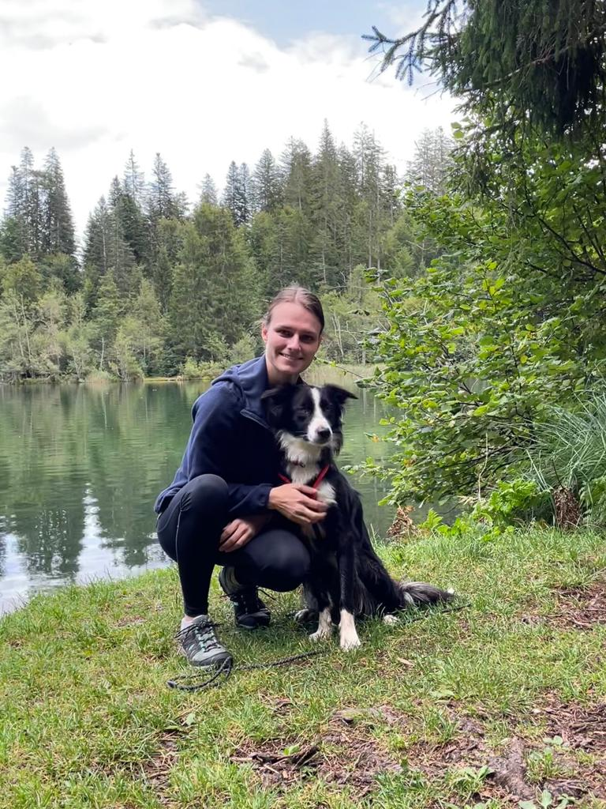

Thesis:
Durch eine Analyse diverser Sendern im In- und Ausland soll die Darstellung untersucht werden.
Durch das Zeigen solcher Sendern, sollen Probanden aufschlussreiche Schlussfolgerungen zu der Wirkung der Darstellungen liefern.
Projekt:
Im Projekt setze ich ein Video-Portrait um. Darin wird das Training der Regionalgruppe Graubünden von REDOG in der Verschüttetensuche begleitet. Interviews mit Mitgliedern finden auch einen Platz. Sofern es im gegebenen Zeitraum zu einem Einsatz kommen sollte, kann dieser auch begleitet werden.
Warum:
Mit meinem eigenen Hund stehe ich in dieser Ausbildung bei REDOG. Deshalb bin ich sehr am Thema interessiert und begeistert davon. Ausserdem ist das Thema relevant und verdient mehr Gehör.